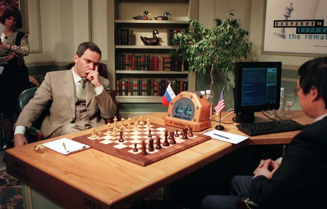
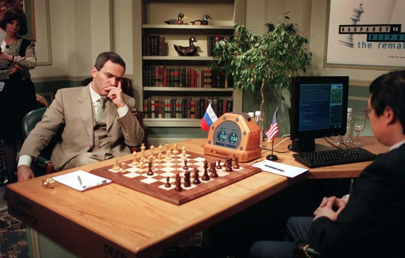

A.I. After Hal
Accueil > Domaines > Présents
Présent de l’intelligence artificielle
 
Dans le domaine des jeux, on voit la manifestation des intelligences artificielles de plus en plus
complexes. Elles deviennent plus générales comparées à des intelligences artificielles du type
algorithmique qui suivent des tâches préprogrammées. De nos jours, l’usage des neurones artificiels
dans cette discipline permet une grande avance. La victoire dans les jeux comme les échecs ou le jeu
de Go qui était auparavant un symbole de notre pensée complexe et intuitive est maintenant obsolète
face a les nouvelles machines. Ceci peut nous rappeler le film de science-fiction 2001 a. Space Odyssey
avec la défaite de l’astronaute par Hal 9000.

Dans le domaine des jeux, on voit la manifestation des intelligences artificielles de plus en plus
complexes. Elles deviennent plus générales comparées à des intelligences artificielles du type
algorithmique qui suivent des tâches préprogrammées. De nos jours, l’usage des neurones artificiels
dans cette discipline permet une grande avance. La victoire dans les jeux comme les échecs ou le jeu
de Go qui était auparavant un symbole de notre pensée complexe et intuitive est maintenant obsolète
face a les nouvelles machines. Ceci peut nous rappeler le film de science-fiction 2001 a. Space Odyssey
avec la défaite de l’astronaute par Hal 9000.
| Nom de la machine | Compagnie créatrice | Réussite | Contexte |
|---|---|---|---|
| Deep Blue | IBM | Victoire contre le meilleur joueur d'échecs à l'époque, Garry Kasparov. La méthode utilisée était la brute force qui consistait à essayer toutes les combinaisons afin de trouver la meilleure. | États-Unis,New York City, 1997 |
| Alpha Zero | DeepMind | Victoire contre les meilleurs joueurs de Go actuels, avec l'usage des neurones artificiels, sans aides humaines. De plus, il est aussi le meilleur joueur d'échecs en surpassant les machines existantes. | December 5, 2017 |
| OpenAI Five | Open Ai | OpenAI est le premier à vaincre les meilleurs joueurs mondiaux dans le domaine de l' eSport sur le jeu DOTA 2. Bien plus complexe que les jeux de société traditionnels tels que Chess et Go selon les développeurs. | The International 2017, Seattle États-Unis |